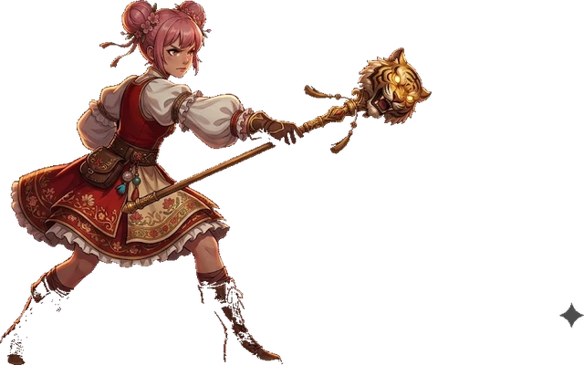
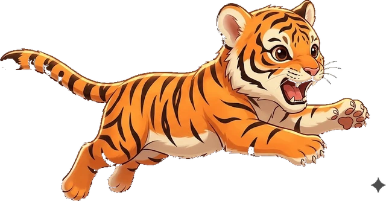
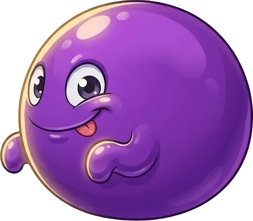
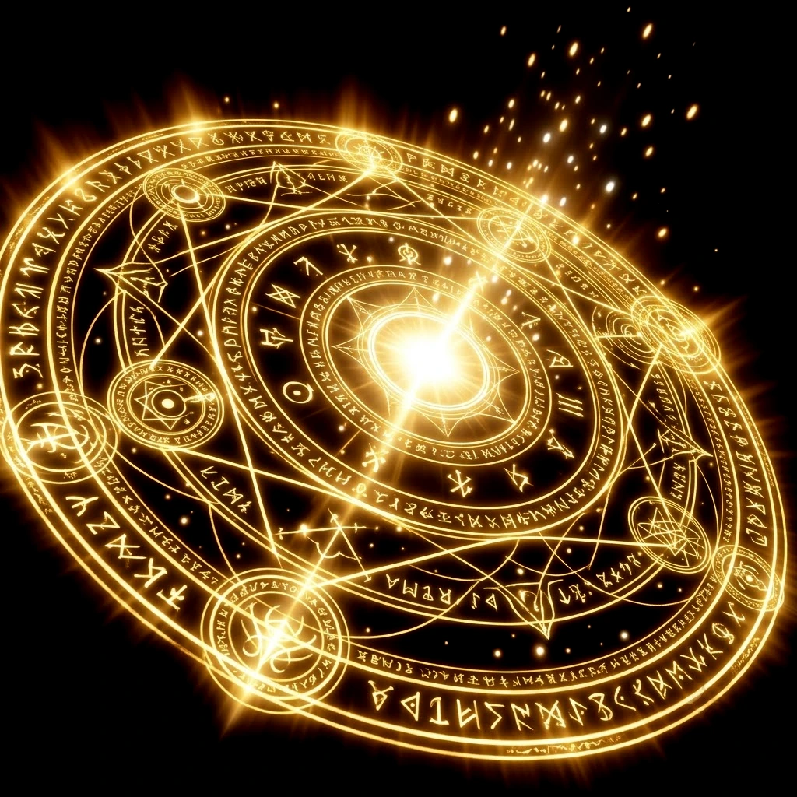
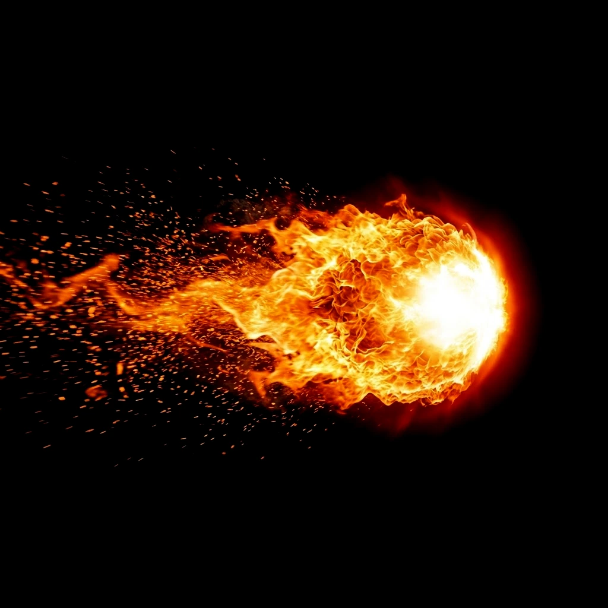

答對就出手，答得越快傷害越高；敵人上方的黃條倒數完會反擊。 每隻敵人都有害怕的乘法表，打中弱點是兩倍傷害（出乘法題時才有）。 連續答對會自動放魔法：3 連火球術、5 連冰霜術、7 連落雷術、10 連聖光審判（還會回血）。
不出題。按攻擊打人，敵人上方的黃條倒數完牠就撲上來，這時按閃避可以完全躲掉。 倒數剩最後半秒才按閃避是「完美閃避」：多回必殺、下一擊變成加成反擊。 技能有連段：先放破魂突刺打上破綻，再放旋風斬會引爆額外傷害。 敵人身上不定時會亮金色破綻圈，那時按攻擊必定爆擊還有額外傷害。 連續打中不被打到會累積連擊，一樣會自動放魔法；太久沒出手連擊會斷掉，被打到也會歸零。